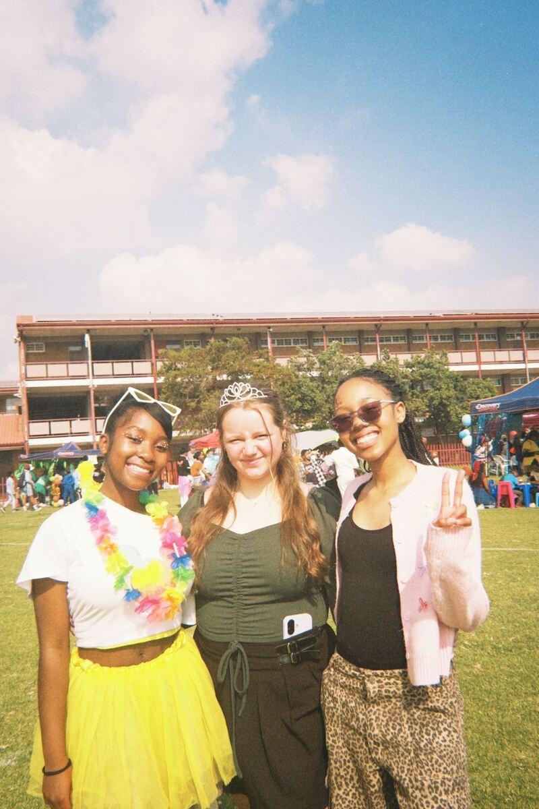
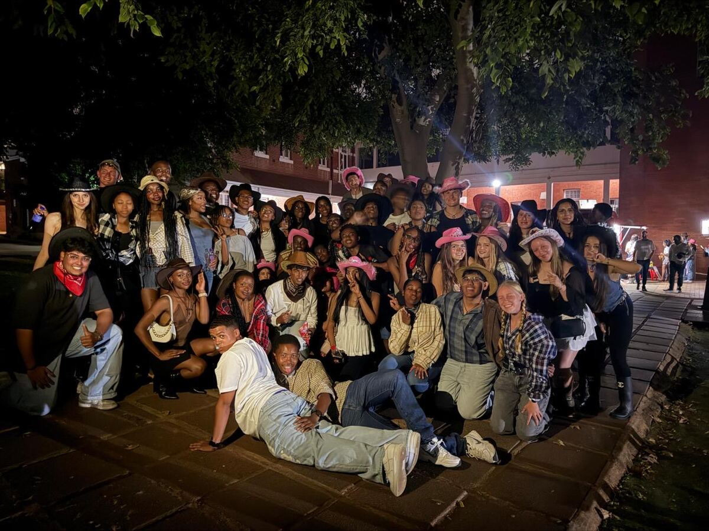
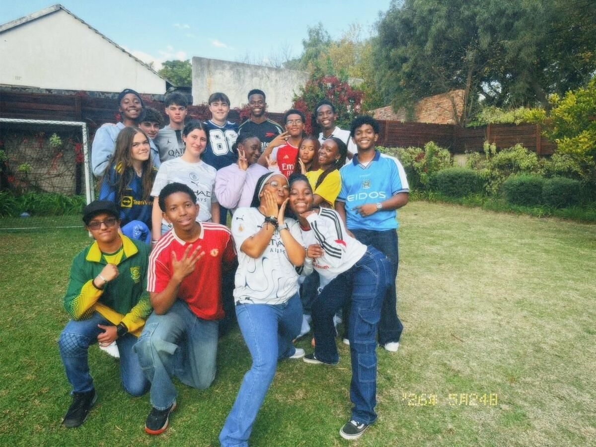
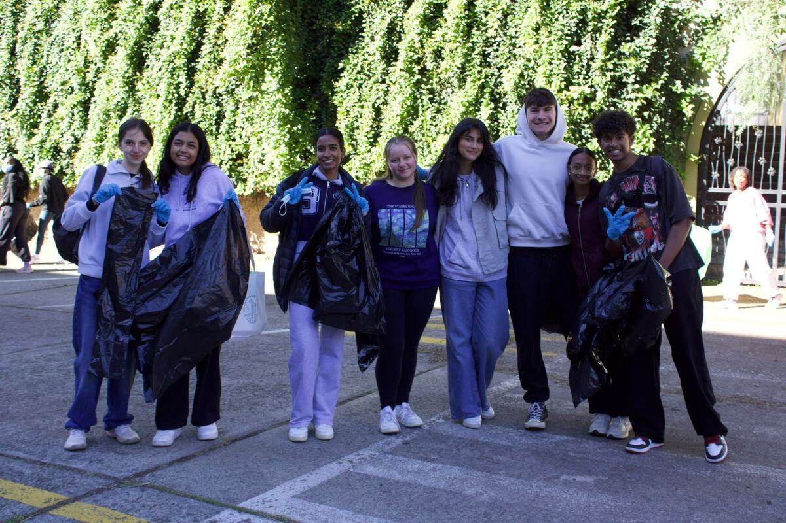
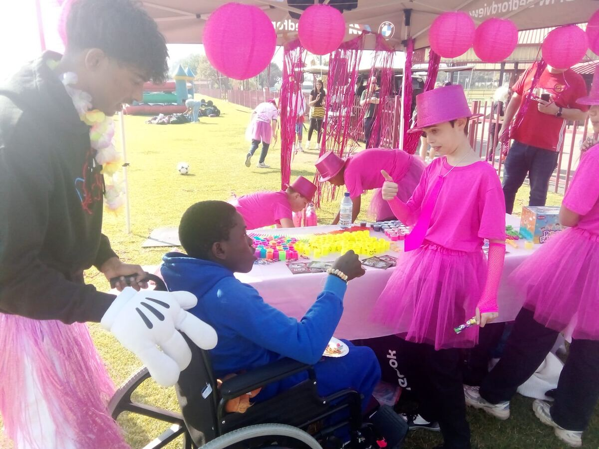

Well-Being
Student mental health, emotional wellness and peer support across Joburg's schools.
Every councillor sits on one of five committees. Each committee runs its own projects and events, and its chairperson sits on the council's Executive. Upcoming events are pulled from the events calendar automatically.

Student mental health, emotional wellness and peer support across Joburg's schools.

Creativity, heritage and the cultural life of the city.

Physical activity, teamwork and active lifestyles.

Sustainability, clean-ups and green awareness.

The council in service of the wider community: visits, drives and partnerships.
The full September programme, including the centenary dinner and Spring Day.